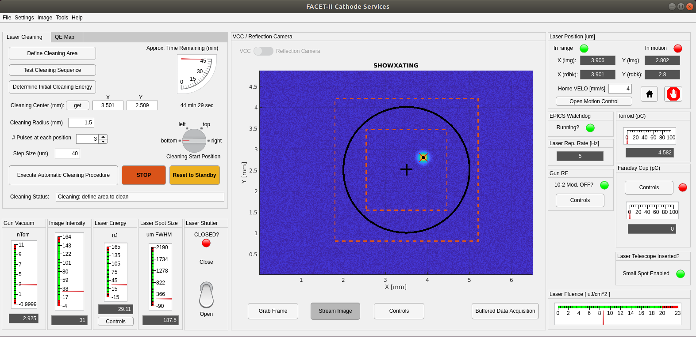

FACET-II Gun: Cathode Services
Author
G. White, SLAC.
email: whitegr -AT- slac.stanford.edu
Release Status: *ALPHA* V0.1
(procedures, software and target values under development)
Hardware Requirements | Controls, Procedures & Software
Overview | Source Code | GUI | Functional
Interface
Hardware Requirements
Laser power & spot size calculations
based on ATF experience from Brendan (keynote).
Hardware requirements and notes on current availability for
software and procedures listed on this page:
- Cathode image camera & imaging screens OK
- Image acquisition via EPICS PV with Static frame grab &
streaming capability
- Cathode reflection camera (PM10241)
- Image acquisition: CTHD:IN10:111:Acquisition etc...
- software needs some debugging (known issue)
- Cathode profile monitor
- PROF:IN10:241:Acquisition etc...
- VCC
- CAMR:LT10:900:Acquisition etc...
- VCC Imaging screen x/y motion control via EPICS PV
- VCTD:LT10:900:VCC_POS_X
- VCTD:LT10:900:VCC_POS_Y
- Illumination control
- Target: CTHD:IN10:111:TGT_LMP_PWR
- Grid CTHD:IN10:111:GRID_LMP_PWR
- Also, as above for device: 241
- uv Source laser OK
- Shutter readback and control EPICS PV controls, redundant
controls
- MPS laser shutter: IOC:SYS1:MP01:MSHUTCTL
- MPS shutter has hardware interlock logic - activates BCS
shutters on fail
- Consider use additional laser table EPICS controllable
device as alternative "failsafe" shutter system (for V.2)
- Laser energy readback via EPICS PV
- x/y motion control to steer spot on cathode
- MIRR:LT10:770:M2_MOTR_H
- MIRR:LT10:770:M2_MOTR_V
- Electron beam charge measurement WORK
NEEDED
- Faraday cup for low charge (<500pC) measurements
- Insertion controls - EPICS PV
- Readback via EPICS PV
- Faraday cup readout only via scope currently, need work
to calibrate and generate EPICS PV
- Faraday cup in general needs to be made to work
- BPMs for higher chage measurements
- BPMS: 221,371,425,511,525,581,631,661
- Gun vacuum measurement, readback by EPICS PV OK
- Two cold cathode gauges available in gun & waveguide
- VGCC:IN10:W285
- VGCC:IN10:133
- Watchdog WORK NEEDED
- Hardware crate with I/O and EPICS IOC, OR just use soft-IOC
with EPICS PV inputs
- Start with SOFT-IOC and upgrade to hardware system later
- Prototype IOC written, needs implementing and testing
- Gun Vacuum RGA WORK NEEDED
- Get existing Windows-based s/w working for use in initial
commissioning
- Write EPICS device driver to provide access to automated
scanning software (for V.2)
Controls, Procedures and Software
Overview
GUI Code Source
GUI
Laser Cleaning (select laser cleaning tab)

Laser cleaning procedure (see UML chart above for full procedure)
- Follow procedure from top to bottom in Laser Cleaning tab,
check boxes to indicate tasks complete
- Use VCC image of cathode or saved QE map to select circular
cleaning area using "Define cleaning area" button - follow
directions in pop-up window
- Using imaging and laser motion control to verify central
position, use GUI interface to defined cleaning area around
cetral location
- GUI generates pictorial representation of cleaning spots
which also serves as progress indicator
- Check selected cleaning radius, set @ pulses per cleaning
spot, laser spot size and cleaning step size
- Estimated time to complete cleaning procedure is indicated
at top right of Laser Cleaning tab for these settings
- Start automated cleaning procedure with appropriate button
push
- Can stop procedure at any time with "STOP" button
- After stopping, can be resumed by re-pressing this button
- If vacuum or laser energy conditions deviate from selected
ranges, stop button is automatically pushed
- If EPICS watchdog program detects excursions in these
parameters or fails, STOP condition is also enabled
- See Cleaning status window for details of why procedure was
stopped in addition to a warning window which pops up
QE Map Generation (QE map tab)
Functional interface:
After installing the Matlab app above, the functional interface
for the fitting algorithm can be used from a Matlab command
window:
>>